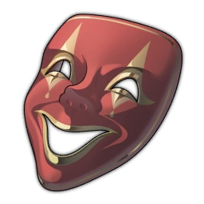

OLW is a non-profit organization meant to provide resources and poems to Queer youth as well as allies and interested individuals. The goal is to both provide emotional and physical help, as well as provide people a better understanding of what people are going through in life.
To submit a poem, you must:
Identify with the LGBTQ+ community
Have a valid email
Your poem must:
Be original, with no AI involved
Must not contain slurs
Have appropriate content warnings
Can not involve future intent to harm(Such as expressing the will to inflict harm on a party, person, or self, talking about past events is fine)
If writing about a specific person, for privacy, the name must not be their actual name
The Lonely Writer is the founder of One Lonely Writer. She individually reads through every submitted poem. She is heavily passionate about activism, coding, video games, and music. She wishes to make this world a better place in her own way, and hopes you will share her dream.
